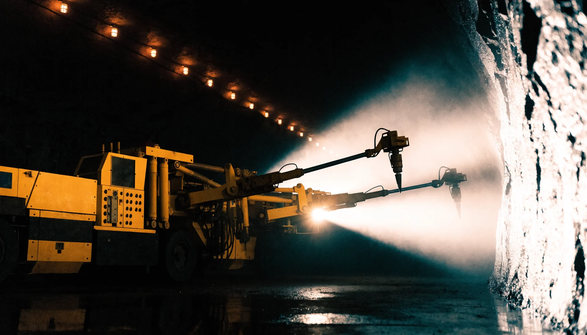

Propuesta web · Digitals · 2026
Tres direcciones · una marca
Mansil merece una web del tamaño de sus máquinas.
Tres webs completas, genuinamente distintas, construidas con el negro y el amarillo de Mansil, su tipografía DIN 2014 y su contenido real: 1.169 repuestos en catálogo, cuatro marcas, más de 20 años, taller y banco de pruebas en Quilicura. Elija una dirección; la afinamos conversando.
Mobile-first · 390 pxHexágono a escala monumentalDIN 2014 real de la marcaDatos vivos verdaderos